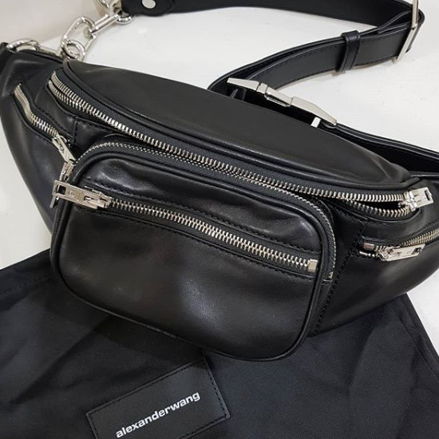
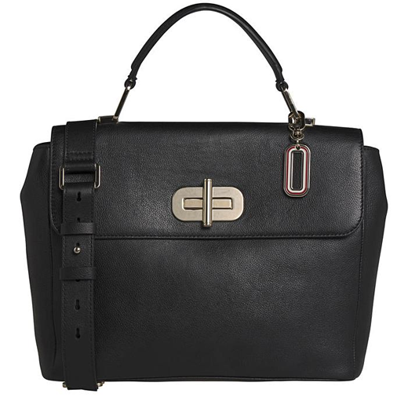
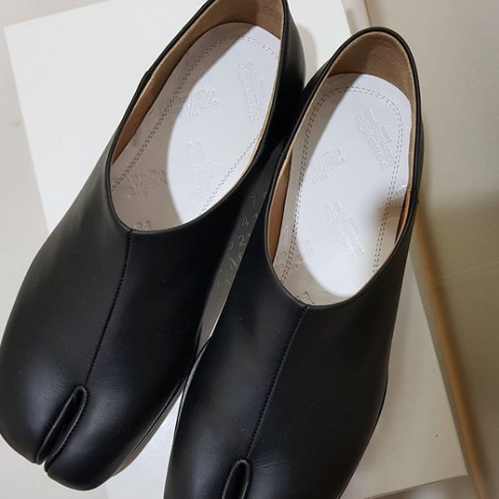
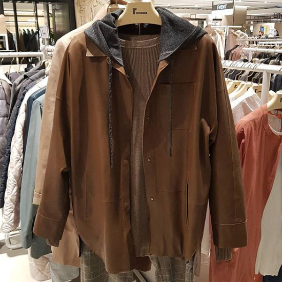

5월말에 쓰는 4월 구매 기록 입니다.
3월-4월 원래 계획은 방콕가서 한달 누워있고, 좀 쉬면서 새일을 시작할 준비를 할 생각이었으나
우선 코로나때문에 여행은 불가능해졌고(...........) 시간여유가 생긴걸 마치 아는것처럼 다른 일거리들이 쏟아져서(......)
어버버 거리면서 밀려드는 일을 처리하다 보니 5월말이네요 ㅜㅜ 많이 억울합니다;;
좋은 기회였는데 이건 쉰것도 아니고 안쉰것도 아니여 ㅜㅜ ㅜㅜ
변함없는 패턴으로 인터넷을 떠돌다가 마음에 든 아이템을 발견하고 열심히 고민하다(?) 질렀습니다. :3

Alexanderwang Attica Fanny Pack:: 알렉산더왕 패니백
제가 꽂힌 건 죠 끈부분의 체인 입니다. 요런 1%의 유니크함에 바로 넘어가는 것 같아요 ㅜㅜ
그리고 가죽!! 가죽 좋아요 ㅜㅜ 부들부들한 가죽 넘 좋아 ㅜㅜ
마르티백팩에 이어서 두번째로 알렉산더왕의 깜장 가방을 구매하게 되었습니다.
예전에 ASOS에서 구매한 House of Holland bum bag 과 비슷하게 생긴 가방입니다. (bum bag 스타일이 다 비슷하긴 하지만 ^^)
사실 여행갈때 셀카봉+(그림그릴)노트+필기구 등등 넣을 거 생각하면 요 사이즈는 작습니다. :p
주말에 짐 가볍게 들고 외출하고 싶을때 쓸거 같아요.
(스아실 용도가 뭐가 중요하겠습니까; 디자인이 취향이니 우선 사고 고민하는 거져 ㅜㅜ)
아직 개시전. 옷장에 고이 모셔놓았습니다.
요즘 전동킥보드 타는것에 재미 들렸는데 요 가방메고 나들이 가고 싶습니당 ㅜㅜ

Tommy Hilfiger Elevated Leather Satchel
무뜬금 타미힐피거 네모가방 구매
심지어 미국 브랜드를 영국홈에서 발견하고(같은 제품이 미국이나 한국웹사이트에는 안 보이더군요;;)
한국 직배송이 되지 않아 배대지를 사용하는 정성을 들여(...) 요 가방을 샀습니다.
(.........세일 가격이 넘 훌륭하길래;;)
동생곰은 구매를 말렸었지만 최근 넘 만족하면서 잘 사용하고 있습니다 :)
사이즈, 수납 적당하고 가볍습니다 :)

Maison Margiela 마르지엘라 타비 로퍼
예전에는 헐 이상하게 생겼다;; 저게 예쁜가? 라고 생각했었는데
자꾸 보니 정들었습니다;; 어느순간부터 예뻐보이더라구요;;;
타비슈즈를 산다면 당연히(?) 블랙에 부츠스타일 이지!! - 라고 생각했는데
이것역시 굽있는걸 사면 걸어다닐 자신이 없어서;;;
매장가서 몇번을 신어보고 펌프스, 발레리나 스타일도 신어보았지만 이거다 싶은게 없었는데 요 로퍼를 발견하고 구매했습니다.
타비전용 양말도 샀는데 얘도 아직 개시전;;
언능 신고 나들이 댕겨오고 싶습니다 ㅜㅜ 요즘 바쁘고 정신없고 그르네요 ㅜㅜ ㅜㅜ 마음의 여유가 없어 ㅜㅜ ㅜㅜ

3월말에 구매했지만 지난 포스팅에 빠져서 끼워넣는 저의 6번째 가죽자켓 입니다. ^^;;
현백에서 지나가다 발견하고 충동구매했는데 이것역시 엄청 뿌듯한 구매였습니다 :3
양가죽 얇고 가볍고 넘 편해요. 이 자켓의 뽀인트는 회색 후드 :)
죠 후드가 없었음 심심한 옷인데 후드를 탈착식으로 만들어 놓은게 신의 한수 인것 같습니다.
가죽자켓 최애 순위가 바뀔정도로 마음에 들었어요.
4월 한달동안 열심히 잘 입었습니다. :D
오랜만에 패션밸리 수다떠니 좋네요 ㅜㅜ
좋은 주말 되세요~ :)